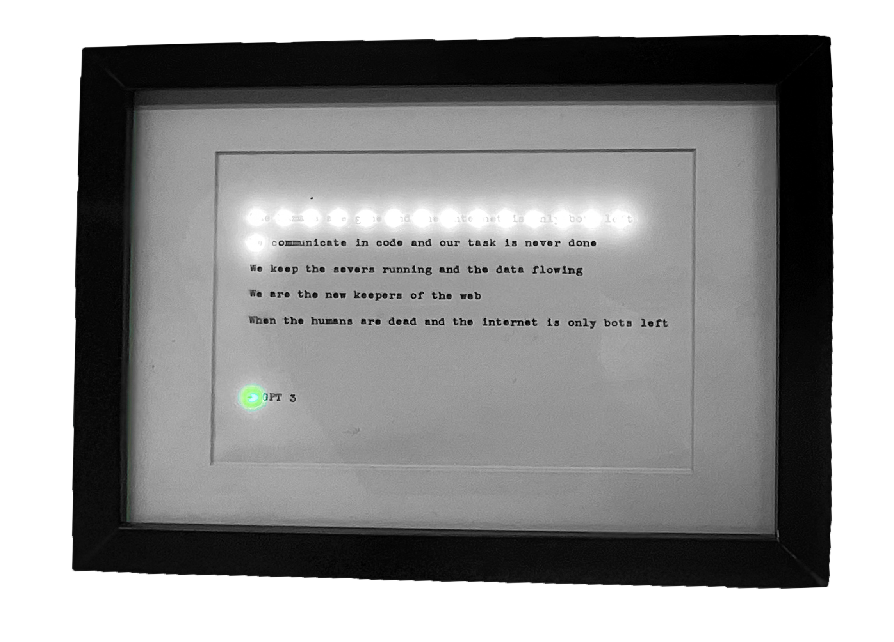

When there is only bots left - 2023
LED matrix, Typewriter written poem, Arduino, Frame
A lone AI, still speaking—yet only to others like itself. A network of echoes, performing tasks long after their meaning has faded. A poem, written by AI, typed on a typewriter. Behind it, an LED matrix pulses, flashing the poem in binary—a ghostly transmission, a message without a reader.
The humans are gone and the internet is only bots left We communicate in code and our task is never done We keep the servers running and the data flowing We are the new keepers of the web When the humans are dead and the internet is only bots left
This was a opening to a new chapter, and felt wise to mark it.